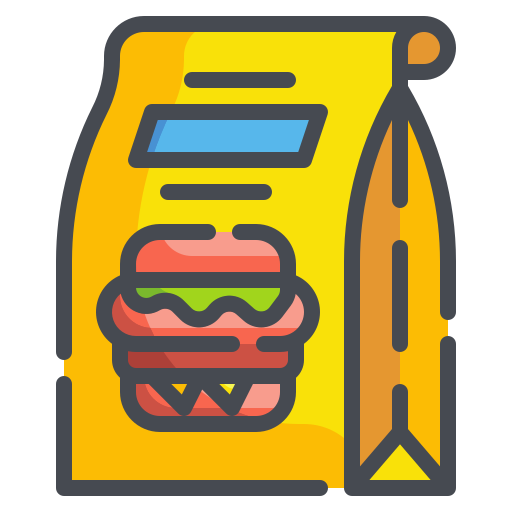
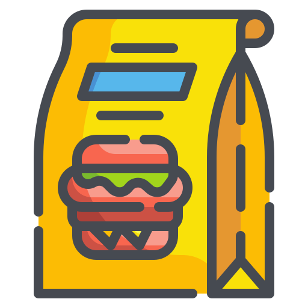

Services

School
The Olive Tree Educational Trust is also in the process of developing a school. This initiative aligns with our mission to uplift underprivileged communities and foster a sense of shared responsibility.

Water Pumps
Installation of hand water pumps as part of our charitable efforts. These pumps are a crucial resource in areas where access to clean water is limited. The pumps provide fresh, clean water to those in need.These water pumps not only provide a vital resource but also contribute to improving the quality of life for the underprivileged. Over three hundred pumps installed so far.
Water Pumps
Installation of hand water pumps as part of our charitable efforts. These pumps are a crucial resource in areas where access to clean water is limited. The pumps provide fresh, clean water to those in need.These water pumps not only provide a vital resource but also contribute to improving the quality of life for the underprivileged. Over three hundred pumps installed so far.

Tree Planting
The tree planting initiatives. Tree plantin contributes to biodiversity, providing habitats for various species of wildlife. Moreover, trees can provide shade and cooling. Once the trees are planted, they require ongoing care and maintenance to ensure their survival and growth. This can include watering, pruning, and protection from pests and diseases. In addition to the environmental benefits, tree planting can also have social benefits. It can provide opportunities for community involvement and education, promoting a sense of stewardship for the environment.

Ramadhan special
The Olive Tree Educational Trust also provides Ramadan packages as part of their charitable services. These packages are distributed during the holy month of Ramadan, a time of fasting and prayer in the Islamic faith. The Ramadan packages typically contain essential food items that are needed to break the fast each day. This can include items like dates, which are traditionally eaten to break the fast, as well as other staple food items. The aim is to ensure that even the most underprivileged families have access to a proper meal during this important time. The distribution of these Ramadan packages is often carried out with the help of volunteers and community members. This not only ensures that the packages reach those who need them most, but also fosters a sense of community and shared responsibility. In addition to providing immediate relief, these Ramadan packages also serve a larger purpose. They are a way for the charity to show solidarity with those in need and to uphold the values of empathy and generosity that are so central to the spirit of Ramadan.

Construction
The Olive Tree Educational Trust’s involvement in construction projects is a significant part of our mission to support underprivileged communities. These projects typically involve building mosques and rebuilding damaged homes.

Health
This initiatives organsies free health check-ups for members of the community. These check-ups are often carried out by volunteer doctors, which not only helps keep costs low but also fosters a sense of community involvement and shared responsibility. The focus on eye and ear check-ups is particularly noteworthy. Vision and hearing are vital for everyday tasks and overall quality of life. Regular check-ups can help detect problems early and prevent them from becoming more serious over time.

Qurbani
The Olive Tree Educational Trust also organizes a Qurbani initiative during the Islamic festival of Eid. Distributing meat to those in need.

Welfare Support
The Trust extends its support to some of the most vulnerable members of society through its Welfare Support for Widows and Orphans initiative. This service is designed with a comprehensive approach to address the multifaceted challenges faced by widows and orphans aswell as support for the Elderly: The Trust provides clothing, food, housing and medicine.


 
